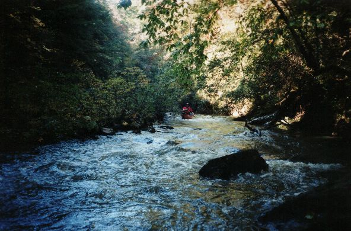
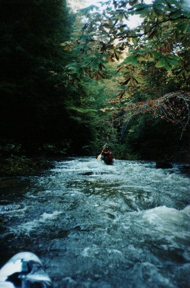

Rush Creek

I know, I know, all the stinking pictures are of Dave Curry.
Well, he always goes and he actually stays behind the camera operator.

Scenic. We actually had water during fall color in Alabama.
This does not happen often.